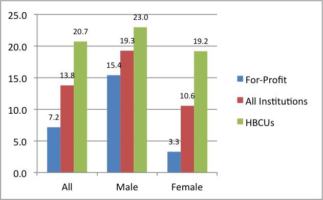

FACT SHEET: Spurring African-American STEM Degree Completion
FACT SHEET: Spurring African-American STEM Degree Completion
Early in his Administration, President Obama made improving science, technology, engineering, and mathematics (STEM) education a priority. To meet the nation's evolving workforce needs, America will need to add 1 million more STEM professionals by 2022. [ 1 ] To meet this need and bring welcome diversity to STEM industries, we must continue to support and encourage STEM degree completion, especially for African-Americans and others who are underrepresented in these fields yet have a long history of achievement in STEM fields.
Historically Black Colleges and Universities (HBCUs) are particularly critical to meeting the STEM challenge, as engines of economic growth and ladders of advancement for generations of African Americans. That's why the Administration has instituted policies that provide $850 million over the next decade to renew, reform, and expand programs to ensure students have the opportunity for educational and career success at HBCUs. Over the past seven years, the Obama Administration's efforts have resulted in unprecedented levels of public-private collaboration in STEM education; policies and budgets focused on maximizing Federal investments to increase student access and engagement in active, rigorous STEM-learning experiences; and meaningful efforts to inspire and recognize young inventors, discoverers, and makers.
Despite many of the STEM education programs called for by the President not being funded by Congress, the Administration has made significant strides to close the access and equity gaps in STEM education. The Department of Education, specifically, created an Office of STEM to help coordinate STEM programs throughout the Department and across our Federal partners. Also, STEM is now a funding priority in over 60 different ED programs—including the Arts—to raise awareness of the need for and interest in strengthening STEM education.
HBCUs Meet the Challenge
For more than a century, HBCUs have been leaders in educating African-American college graduates who excel in their fields. A recent report from the National Science Foundation revealed that 21 of the top 50 institutions for educating African-American graduates who go on to receive their doctorates in science and engineering, are HBCUs.
The contributions of HBCUs do not stop there:
- Even though our nation's HBCUs make up just 3 percent of colleges and universities, they produce 27 percent of African-American students with bachelor's degrees in STEM fields.
- In 2011, HBCUs conferred one-fourth of the bachelor's degrees in education awarded to African-Americans.
- Xavier University, an HBCU, awards more undergraduate degrees in the biological and physical sciences to African-American students than any other university in the nation.[ 2 ]
HBCUs have implemented proven practices to assist students in STEM fields to obtain rich professional experiences, research opportunities, and mentorships; navigate through courses and financial challenges, and drive students to post-baccalaureate success.
STEM Degrees Conferred per 1,000 Black Students Enrolled in 2009 [ 3 ]

Need to Further Invest in STEM Degree Completion
African-American and Latino college enrollment is up by more than a million students since 2008. [ 4 ] While these institutions have made considerable progress, there is more to be done. Students of color still have low degree completion rates and low representation in STEM fields, where needs for professionals and technical personnel are growing tremendously. African-American students, like their Hispanic, American Indian, and Asian counterparts, are underrepresented in STEM programs and courses of study compared to their overall college enrollment rate. African-Americans received just 7.6 percent of all STEM bachelor's degrees and 4.5 percent of doctorates in STEM. [ 5 ] In 2011, 11 percent of the workforce was black, while 6 percent of STEM workers were black (up from 2 percent in 1970). [ 6 ]
Need to Further Address Resource and Achievement Gaps to Increase Degree Attainment
Despite educational progress over the past seven years, including climbing graduation rates and shrinking dropout rates, too many African-American students still lack access to the educational resources that offer a fair shot at success. than one-third of public high schools serving predominantly African-American students offer calculus. Only about 40 percent of public high schools serving predominately African-American students offer physics. [ 7 ] This lack of access to foundational STEM skills puts African-American students at a significant disadvantage in preparing for advanced STEM courses and careers. In addition to the resource gaps, African-American students exhibit achievement gaps, often established by the fourth grade and show little change after, according to the Joint Center for Political and Economic Studies. Moreover, by the eighth grade, less than one-third of African-American students are proficient in math and science. A 2012 study amongst 34 industrialized countries belonging to the Organization for Economic Cooperation and Development found that the U.S. ranked 27th on the math exams and 20th on the science exams. [ 8 ]
Advanced Placement (AP) courses are high school courses through which students can acquire college credit. African-American students represent 16 percent of all high school students, but only 9 percent among students enrolled in an AP course. [ 9 ] Moreover, of those African-American students enrolled in an AP course, only 4 percent received AP test scores that qualified for college credit. No African-American students took the AP computer science exam in nine states: Idaho, Mississippi, Montana, New Hampshire, New Mexico, North Dakota, South Dakota, Utah, and Wyoming. Mississippi has the highest share of African-Americans of any state. [ 10 ], [ 11 ]
Administration and Department Efforts to Support STEM Degree Attainment
From early in his Administration, President Obama has made STEM education a priority. The Administration's actions to accelerate progress include:
- The America's College Promise proposal makes two years of community college free for hard-working students, and also offers two years at four-year HBCUs and Minority Serving Institutions (MSIs) at no or at a significantly reduced cost.
- The Administration has secured more than $1 billion in private investments for improving STEM education as part of the President's Educate to Innovate campaign.
- Thanks to deep public and private commitments, our nation is 50% of the way towards achieving the goal the President set in 2011, of preparing 100,000 new math and science teachers by 2021, and a historic 25,000 additional engineers are graduating yearly compared to when President Obama took office. [ 12 ]
- This White House has announced more than 350 commitments from college and university leadership and others to provide pathways for underrepresented students to attain STEM degrees.
- President Obama has started traditions such as the White House Science Fair to honor young people using science, technology, engineering, and mathematics to improve their communities and the world.
- And in his final budget announced last month, the President sustains this impressive track record with an investment of $3.0 billion across 14 Federal agencies for dedicated STEM education programs.
The Department of Education, specifically, administers a number of impactful STEM programs to improve student preparedness and increase degree attainment, including:
- The Mathematics and Science Partnerships Program that funds collaborative partnerships between STEM departments at institutions of higher learning and high-need school districts after states hold their own competitions.
- The Teacher Quality Partnership that improves the quality of new teachers by creating partnerships among institutions of higher education, high-need school districts, and early childhood education programs.
- The Minority Science and Engineering Improvement Program that assists predominantly minority institutions in effecting long-range improvements in science and engineering education programs and in increasing the flow of underrepresented minorities, particularly minority women, into science and engineering careers.
- The Upward Bound Math-Science Program is designed to strengthen the math and science skills of participating students. The aim is to encourage students to pursue postsecondary degrees, and ultimately professions, in these fields.
Resources
- http://www.bls.gov/careeroutlook/2014/spring/art01.pdf
- http://www.nsf.gov/statistics/infbrief/nsf13323/nsf13323.pdf (table 7)
- Enrollment is the total number of black students enrolled in accredited U.S. bachelor's degree programs in the Fall 2008 semester
- http://nces.ed.gov/programs/digest/d13/tables/dt13_306.30.asp
- https://nces.ed.gov/programs/digest/d14/tables/dt14_318.45.asp
- http://www.census.gov/prod/2013pubs/acs-24.pdf, pg. 2
- Simon, Stephanie. "Racial Divide Runs Deep in U.S. Schools, Study Finds." Reuters. March 6, 2012. http://www.reuters.com/article/us-usa-education-inequality-idUSTRE82507620120306.
- http://www.oecd.org/unitedstates/PISA-2012-results-US.pdf
- http://www2.ed.gov/about/offices/list/ocr/docs/crdc-college-and-career-readiness-snapshot.pdf, pg. 11
- http://research.collegeboard.org/programs/ap/data/archived/ap-2014 (state report summaries)
- http://www.wiche.edu/info/knocking-8th/profiles/ms.pdf
- https://www.whitehouse.gov/blog/2016/02/11/stem-all
Prepared by the White House Initiative on Educational Excellence for African Americans